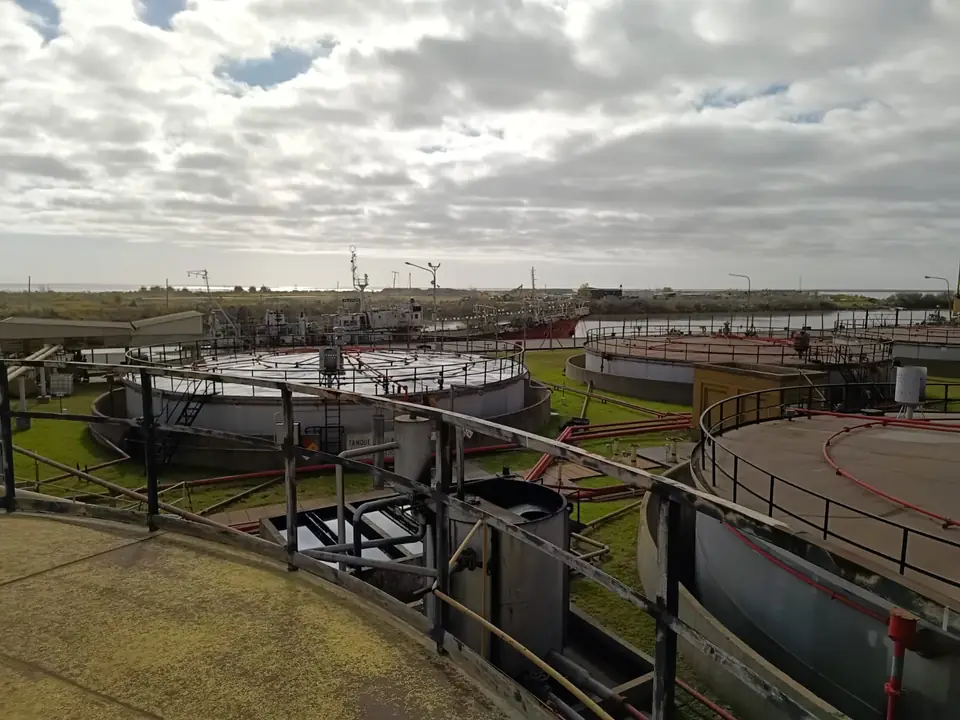
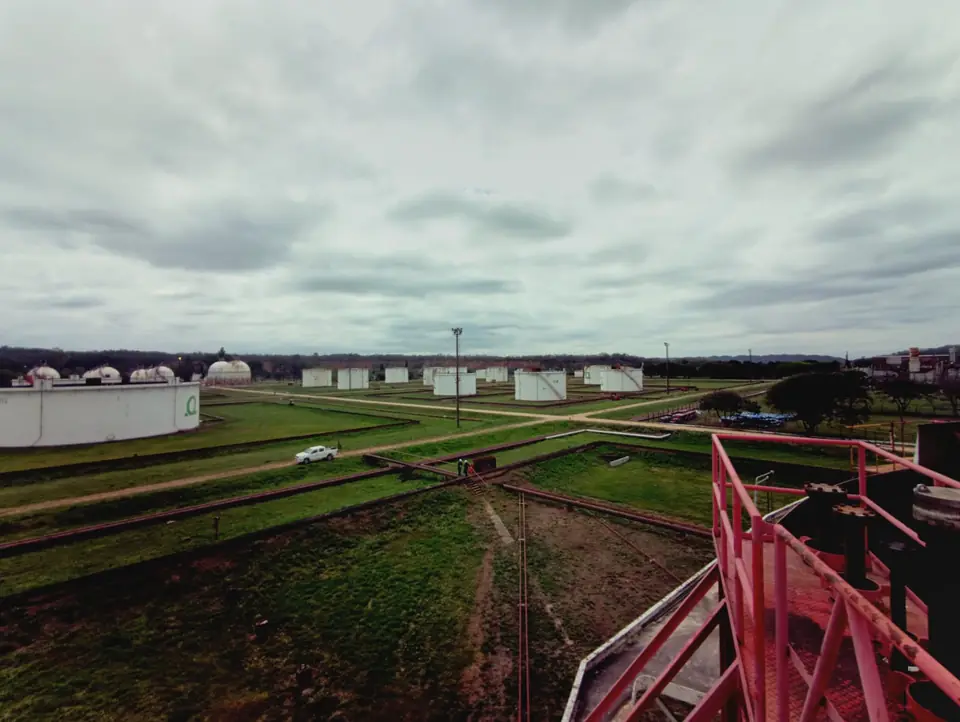
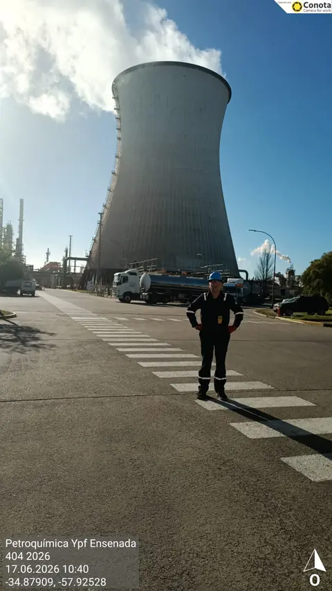
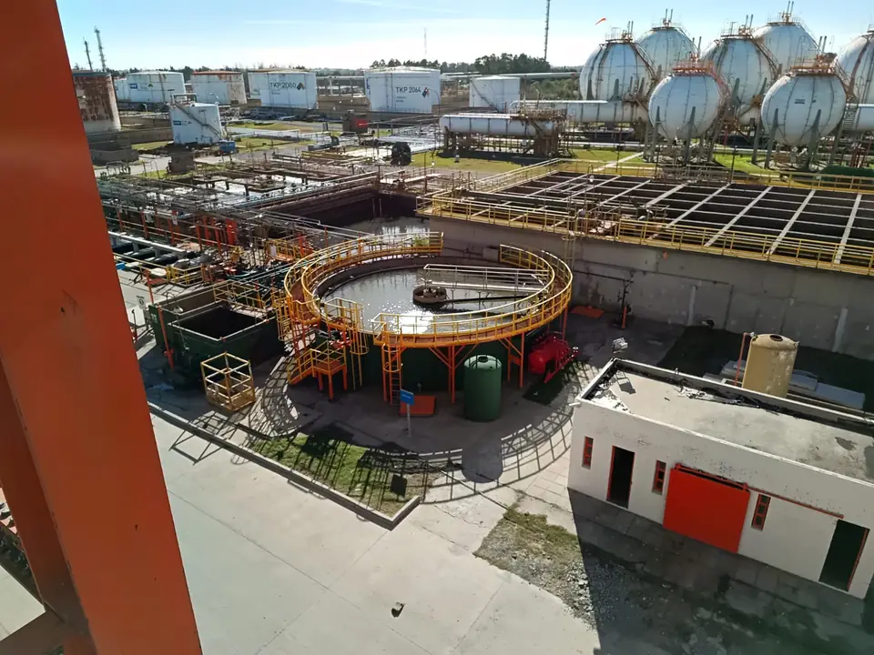
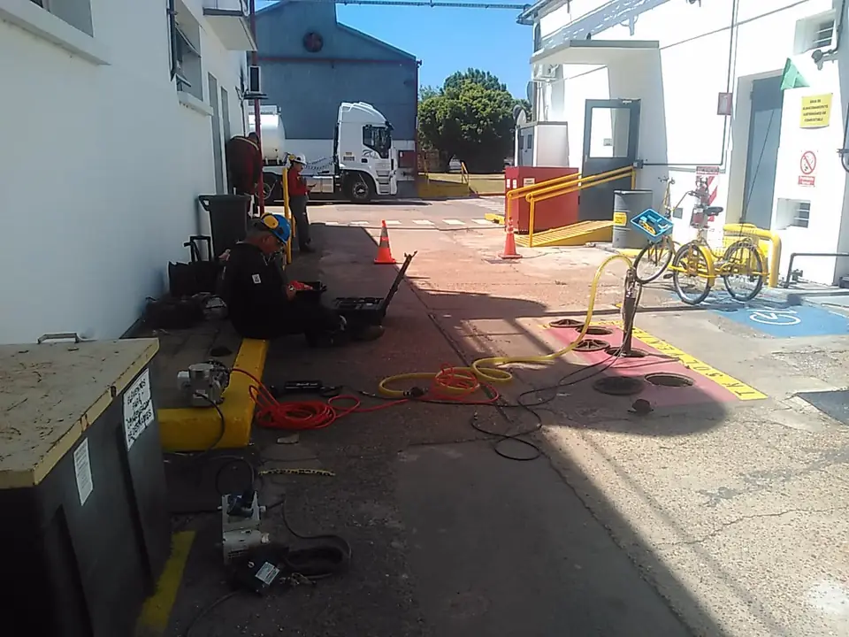

Proyectos
Proyectos y trabajos realizados
Registros fotográficos y antecedentes de distintos trabajos en instalaciones de nuestros clientes.
Galería de trabajos














Registros fotográficos y antecedentes de distintos trabajos en instalaciones de nuestros clientes.




